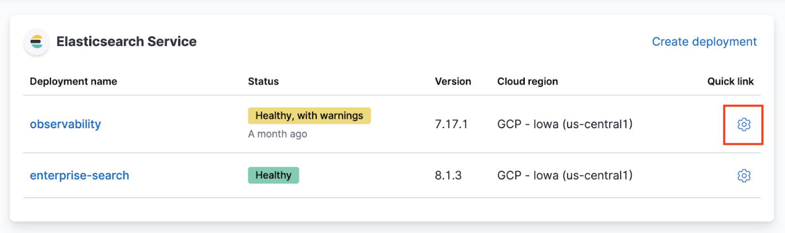

JVM heap usage exceeds the allowed threshold on master nodesedit
Health check
- Log in to the Elasticsearch Service Console.
-
From the Elasticsearch Service panel, click the Quick link icon corresponding to the deployment that you want to manage.
 -
On your deployment page, scroll down to Instances and check if the JVM memory pressure for your Elasticsearch instances is high.

Possible causes
-
The master node is overwhelmed by a large number of snapshots or shards.
-
External tasks initiated by clients
- Index, search, update
- Frequent template updates due to the Beats configuration
-
Internal tasks initiated by users
- Machine Learning jobs, watches, monitoring, ingest pipeline
-
Internal tasks initiated by Elasticsearch
- Nodes joining and leaving due to hardware failures
- Shard allocation due to nodes joining and leaving
- Configuration of ILM policies.
-
Resolutions
-
If the master node is overwhelmed by external tasks initiated by clients:
Investigate which clients might be overwhelming the cluster and reduce the request rate or pause ingesting, searching, or updating from the client. If you are using Beats, temporarily stop the Beat that’s overwhelming the cluster to avoid frequent template updates.
-
If the master node is overwhelmed by internal tasks initiated by users:
- Check cluster-level pending tasks.
- Reduce the number of Machine Learning jobs or watches.
- Change the number of ingest pipelines or processors to use less memory.
-
If the master node is overwhelmed by internal tasks initiated by Elasticsearch:
- For nodes joining and leaving, this should resolve itself. If increasing the master nodes size doesn’t resolve the issue, contact support.
-
For shard allocation, inspect the progress of shards recovery.
-
Make sure
indices.recovery.max_concurrent_operationsis not aggressive, which could cause the master to be unavailable. -
Make sure
indices.recovery.max_bytes_per_secis set adequately to avoid impact on ingest and search workload.
-
Make sure
- Check ILM policies to avoid index rollover and relocate actions that are concurrent and aggressive.
- If the master node is overwhelmed by a large number of snapshots, reduce the number of snapshots in the repo.
- If the master node is overwhelmed by a large number of shards, delete unneeded indices and shrink read-only indices to fewer shards. For more information, check Reduce a cluster’s shard count.